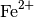

MagFormFactorCorrection dialog.
Table of Contents
MagFormFactorCorrection corrects a workspace for the magnetic form factor F(Q) by dividing S(Q,w) by F(Q)^2.
| Name | Direction | Type | Default | Description |
|---|---|---|---|---|
| InputWorkspace | Input | MatrixWorkspace | Mandatory | Workspace must have one axis with units of Q |
| OutputWorkspace | Output | MatrixWorkspace | Mandatory | Output workspace name. |
| IonName | Input | string | Cu2 | The name of the ion: an element symbol with a number indicating the valence, e.g. Fe2 for Fe2+ / Fe(II). Allowed values: [‘Au5’, ‘Au4’, ‘Au2’, ‘Au1’, ‘Pt3’, ‘Ir5’, ‘Ir0’, ‘Os5’, ‘Os3’, ‘Os2’, ‘Os1’, ‘Re6’, ‘Re4’, ‘Re3’, ‘Re2’, ‘Re1’, ‘Re0’, ‘W5’, ‘W2’, ‘W1’, ‘W0’, ‘Ta4’, ‘Ta3’, ‘Ta2’, ‘Hf3’, ‘Am7’, ‘Cu2’, ‘Eu2’, ‘Ni1’, ‘Pt2’, ‘W4’, ‘Cu3’, ‘V0’, ‘Ni3’, ‘V2’, ‘Ni0’, ‘Ir3’, ‘Ce2’, ‘Co2’, ‘Cu1’, ‘Eu3’, ‘Y0’, ‘Co1’, ‘Pu5’, ‘Fe2’, ‘Nb0’, ‘Co3’, ‘Ni4’, ‘Mn4’, ‘Cr2’, ‘Zr1’, ‘Re5’, ‘Sc0’, ‘Yb3’, ‘V1’, ‘Zr0’, ‘Ti1’, ‘Cr0’, ‘Fe0’, ‘Au3’, ‘Sc2’, ‘Sc1’, ‘Ir6’, ‘Ti0’, ‘Pt5’, ‘Mn3’, ‘U3’, ‘Os4’, ‘Ti2’, ‘Gd3’, ‘Ir1’, ‘V4’, ‘Ir4’, ‘Mn1’, ‘Co0’, ‘Fe3’, ‘Cr4’, ‘Mn0’, ‘Pd1’, ‘Pu3’, ‘V3’, ‘Cr3’, ‘Tm2’, ‘Sm3’, ‘Mn2’, ‘Er2’, ‘Gd2’, ‘Nb1’, ‘Cu4’, ‘Am2’, ‘Mo0’, ‘Mo1’, ‘Pt1’, ‘Tc0’, ‘Ir2’, ‘Cu0’, ‘Rh1’, ‘Tc1’, ‘Pt6’, ‘Hf2’, ‘Pd0’, ‘Ru0’, ‘Ru1’, ‘Sm2’, ‘Rh0’, ‘Os0’, ‘Tm3’, ‘Fe1’, ‘Ce3’, ‘Nd3’, ‘Tb2’, ‘Tb3’, ‘Ni2’, ‘Dy2’, ‘Dy3’, ‘Ti3’, ‘Nd2’, ‘Am6’, ‘Ho2’, ‘Fe4’, ‘Ho3’, ‘W3’, ‘Yb2’, ‘Os6’, ‘Am5’, ‘Er3’, ‘Pr3’, ‘U4’, ‘Np3’, ‘U5’, ‘Pt4’, ‘Np6’, ‘Os7’, ‘Np4’, ‘Co4’, ‘Cr1’, ‘Np5’, ‘Pu4’, ‘Pu6’, ‘Am3’, ‘Am4’] |
| FormFactorWorkspace | Output | MatrixWorkspace | If specified the algorithm will create a 1D workspace with the form factor vs Q with a name given by this field. |
Scales the InputWorkspace by  where
where  is
the magnetic form factor for the ion specified in IonName.
is
the magnetic form factor for the ion specified in IonName.
IonName must be specified as a string with the element name followed by a number which indicates the charge / oxidation state. E.g. Fe2 indicates  or Fe(II).
The input workspace must have one axis with units of MomentumTransfer.
Note
To run these usage examples please first download the usage data, and add these to your path. In MantidPlot this is done using Manage User Directories.
ISIS Example
The following code will run a reduction on a MARI (ISIS) dataset and apply
the algorithm to the reduced data. The datafiles (runs 21334, 21337, 21346) and
map file ‘mari_res2013.map’ should be in your path. Run number 21337 is a
measurement of a PrAl3 sample from the neutron training course. The single
crystal field excitation around 4.5 meV should have an intensity variation that
follows the magnetic form factor. Thus, the integrating between 4 and 5 meV in
the corrected workspace should yield a nearly flat line along the  direction.
direction.
from Direct import DirectEnergyConversion
from mantid.simpleapi import *
rd = DirectEnergyConversion.DirectEnergyConversion('MARI')
ws = rd.convert_to_energy(21334, 21337, 15, [-15,0.05,15], 'mari_res2013.map',
monovan_run=21346, sample_mass=10.62, sample_rmm=221.856, monovan_mapfile='mari_res2013.map')
ws_sqw = SofQW3(ws, [0,0.05,6], 'Direct', 15)
ws_corr = MagFormFactorCorrection(ws_sqw, IonName='Pr3', FormFactorWorkspace='Pr3FF')
Test Example
This example uses a generated dataset so that it will run on automated tests of the build system where the above datafiles do not exist.
import numpy as np
ws = CreateSampleWorkspace(binWidth = 0.1, XMin = 0, XMax = 50, XUnit = 'DeltaE')
ws = ScaleX(ws, -15, "Add")
LoadInstrument(ws, InstrumentName='MARI', RewriteSpectraMap = True)
ws = SofQW(ws, [0, 0.05, 8], 'Direct', 35)
Q = ws.getAxis(1).extractValues()
for i in range(len(Q)-1):
qv = ( (Q[i]+Q[i+1])*0.5 ) / 4 / np.pi
y = ws.dataY(i)
y *= np.exp(-16*qv*qv)
ws_corr = MagFormFactorCorrection(ws, IonName='Fe3', FormFactorWorkspace='Fe3FF')
Categories: Algorithms | CorrectionFunctions